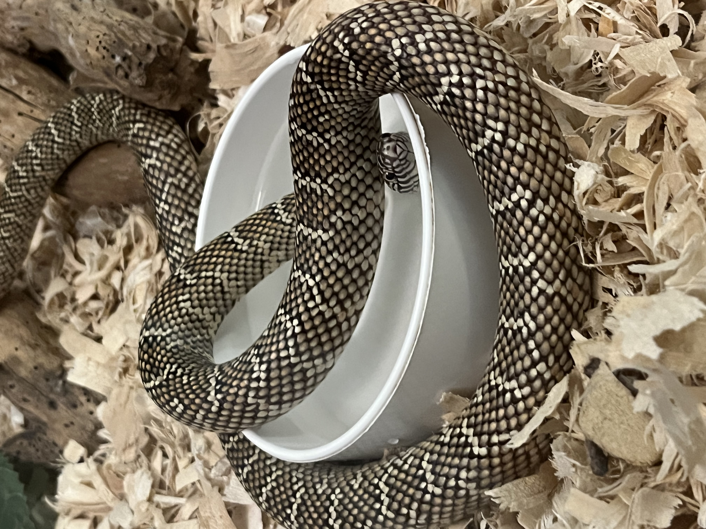

Welcome to an Online Shrine dedicated to my Beloved Pet Snake Saap <3333
Plus Information on Caring for Florida King Snakes

I love Saap. He is a three year old Florida King Snake we adopted from some friends. He is very friendly even though he bit me once and he has bitten my family members numerous times. Saap loves eating mice and he loves slithering around. If you have warm freshly dried laundry, I am sure Saap will find his way there.